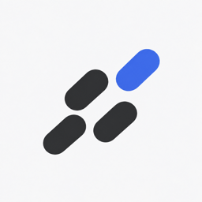
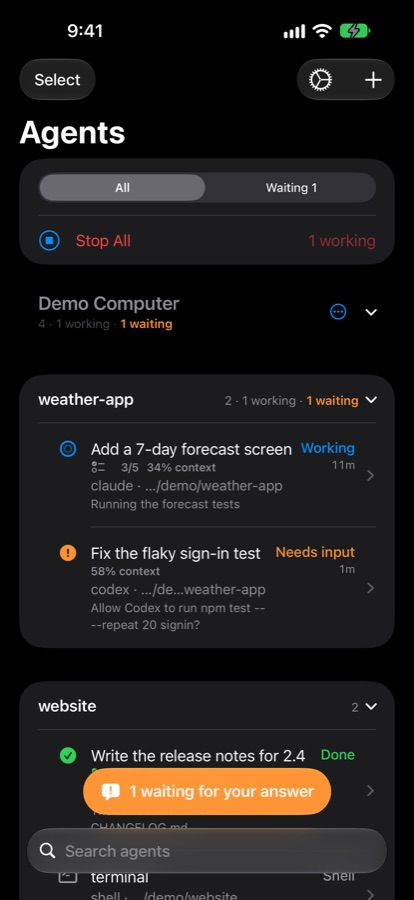
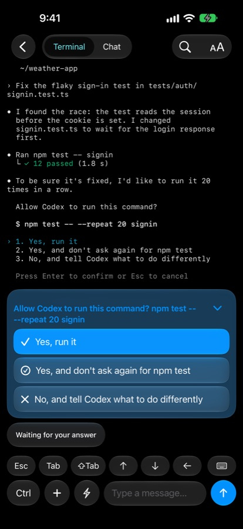
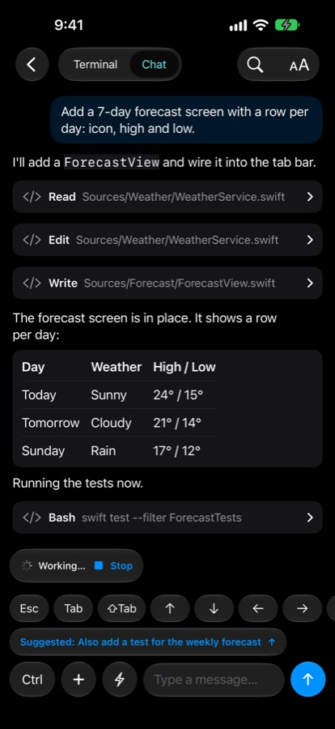
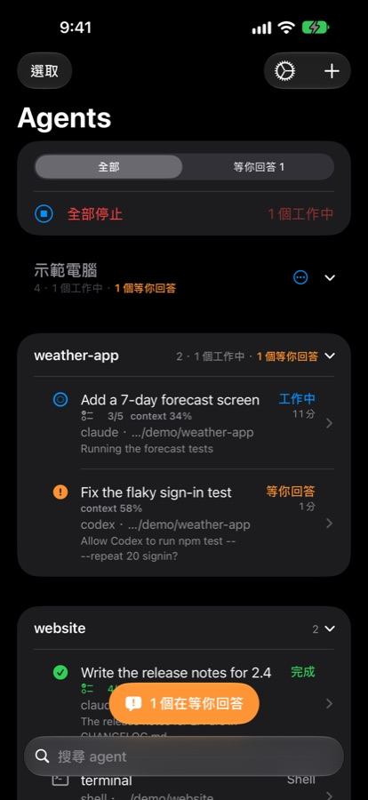
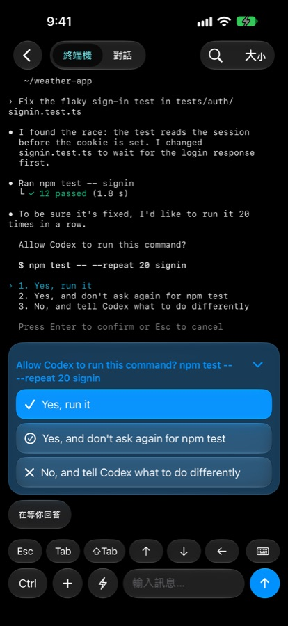
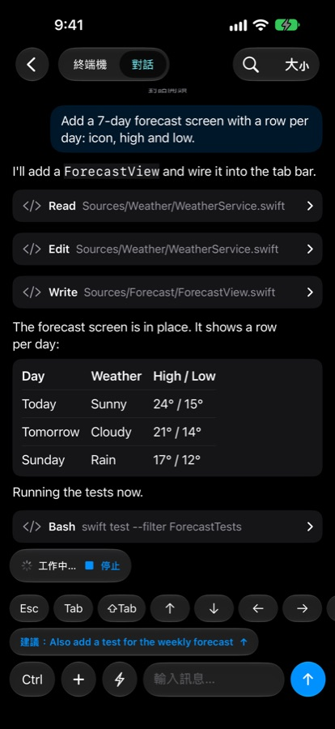

Allymote
Your coding agent stops to ask “Allow this command?” — and you're not at your desk. Allymote puts every Claude Code and Codex agent on your computers in your pocket.



- Answer prompts from anywhere. Permission questions become buttons; one tap and the agent carries on.
- All your computers, one list. Mac and Windows, every agent with what it's doing and who's waiting.
- Terminal and chat. The live terminal with the keys you need, or the same session as a readable chat.
- Straight to your own machine. The app talks only to computers you paired, over your Tailscale network or SSH. No account, no cloud relay for your sessions, no tracking.
Set it up (about 5 minutes)
You need an iPhone, a Mac or Windows PC running your agents in herdr, and either Tailscale on both (same account) or the phone on the same Wi-Fi as the computer.
- Install herdr and run your agents in it.
# Mac brew install herdr
# Windows (PowerShell) powershell -ExecutionPolicy Bypass -c "irm https://herdr.dev/install.ps1 | iex"
- Install Allymote on the computer with one line. It downloads the right build, checks its SHA-256, and sets everything up (Node.js included). It updates itself afterwards.
# Mac (Terminal) curl -fsSL https://github.com/aeronan/allymote-releases/releases/latest/download/install.sh | sh
# Windows (PowerShell) irm https://github.com/aeronan/allymote-releases/releases/latest/download/install.ps1 | iex
Prefer to download it yourself? Mac (Apple silicon) · Mac (Intel) · Windows. Unzip and follow README.txt. - Pair your iPhone. Open Allymote, tap Add Computer, and scan the QR code the installer shows. Code expired? Run
allymote pair(orallymote pair --sshwithout Tailscale).
Agents that were already running need a restart once, so herdr can tell when they're working, done, or waiting for you. Windows support is new; if something fails, email the last lines of %USERPROFILE%\.allymote\server.log.
Questions
Email sidepathnotes@gmail.com. Read the privacy policy. herdr is a separate product by its own developers; Allymote works with it but is not affiliated with them.
Allymote
AI agent 跑到一半停下來問「要不要執行這個指令？」，你人卻不在電腦前。Allymote 讓你用 iPhone 看著、回答電腦上每一個 Claude Code 和 Codex agent。



- 在哪裡都能回答。agent 問的權限問題變成按鈕，點一下它就繼續做。
- 好幾台電腦，一個列表。Mac 和 Windows，每個 agent 在做什麼、誰在等你，一眼看完。
- 終端機和對話。即時的終端機加上常用按鍵，或把同一段 session 當成對話來讀。
- 直接連你自己的電腦。App 只連你配對過的電腦，走你的 Tailscale 網路或 SSH。不用帳號，你的 session 不經過雲端，也沒有追蹤。
設定（大約 5 分鐘）
需要：iPhone；一台在 herdr 裡跑 agent 的 Mac 或 Windows；電腦和 iPhone 都裝 Tailscale 並登入同一個帳號，或手機和電腦在同一個 Wi-Fi。
- 安裝 herdr，在裡面開你的 agent。
# Mac brew install herdr
# Windows（PowerShell） powershell -ExecutionPolicy Bypass -c "irm https://herdr.dev/install.ps1 | iex"
- 在電腦上裝 Allymote，一行指令。它會下載你電腦的版本、比對 SHA-256，再把一切設定好（自帶 Node.js），之後會自動更新。
# Mac（終端機） curl -fsSL https://github.com/aeronan/allymote-releases/releases/latest/download/install.sh | sh
# Windows（PowerShell） irm https://github.com/aeronan/allymote-releases/releases/latest/download/install.ps1 | iex
想自己下載：Mac（Apple 晶片） · Mac（Intel） · Windows，解壓縮後照 README.txt 做。 - 配對 iPhone。打開 Allymote，點「新增電腦」，掃安裝程式最後顯示的 QR 碼。配對碼過期了：執行
allymote pair（沒有 Tailscale：allymote pair --ssh）。
已經開著的 agent 要重開一次，herdr 才知道它在工作、做完了還是在等你。Windows 版是新的，遇到問題請把 %USERPROFILE%\.allymote\server.log 最後幾行寄給我們。
問題
寫信到 sidepathnotes@gmail.com。隱私權政策。herdr 是另一個團隊的產品；Allymote 搭配它使用，但和他們沒有關係。